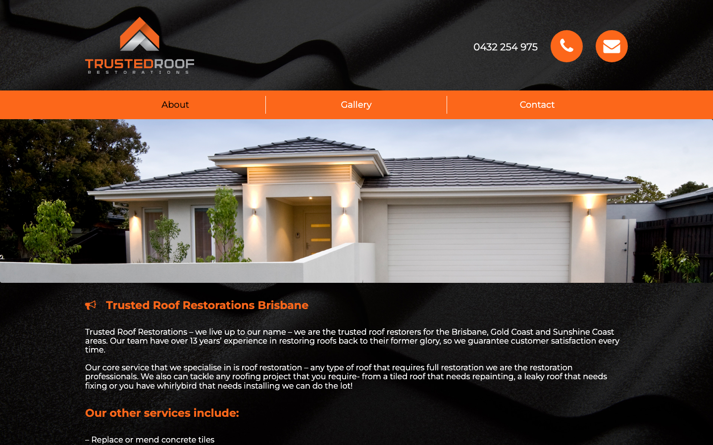
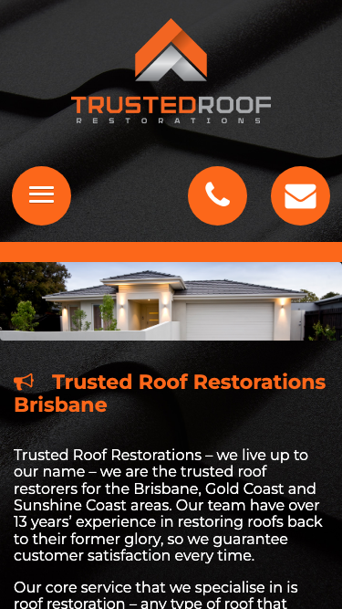

53/100 · strong_redesign · 行业：roofer · 地区：Brisbane · Google 评价：5★ （128 条）
投入分级： D 跳过 — 不投入精力
触发依据： - [hard skip · too_many_categories] GBP 多元业务分类 ≥ 5 个 — 需求复杂度超出标准产品包
下一步行动： 不投入精力，归档原因。’;
线索来源 · 联系开场可用: - 来源:
Google Places API (官方搜索) - 搜索关键词:
roofer brisbane - 结果排名: 第 5 位 -
首次发现: 2026-05-14 - Batch:
places-roofer-brisbane-202605150200
审计结论： audit_score=53 → strong_redesign · weakest: seo 34, technical 38 · fired: no_https, high_traction_old_site · 1 critical issues
已触发的 hard triggers： no_https ·
high_traction_old_site


慢速 4G 加载实景视频（1.6 Mbps · 150ms 延迟 · 4× CPU 节流，模拟真实手机访客的体验）：
The site shows the business name and contact icons clearly, but the heavy dark styling, weak trust proof, and unclear mobile actions make it feel older than a current Brisbane roofing business.
新鲜度 3/10 · 信任度 5/10 ·
转化准备度 5/10 · 设计年代 outdated
值得保留的优点： - The business name and logo are clearly visible in both desktop and mobile screenshots. - The orange accent color is memorable and can be reused for calls to action. - The visible phone number on desktop is easy to find in the header.
技术事实
http only
普通话翻译
你的网站没有 HTTPS — 浏览器会在地址栏显示「不安全」标记，部分浏览器（Chrome / Firefox）甚至会弹出全屏警告挡住页面。
对客户的影响
Google 早在 2018 年起把 HTTPS 列为搜索排名因素，没有 HTTPS 直接拉低自然搜索可见度；且超过 80% 的访客看到「不安全」标识会立刻关掉。对你这种 128 条 Google 评价积累起来的口碑来说，访客在网址栏就被劝退，等于浪费了所有 GBP 流量。
技术事实
On mobile, the top area shows a round orange phone icon but no visible phone number next to it.
普通话翻译
手机页面只有电话图标，没有直接显示电话号码，客户要先猜这个按钮能不能打电话。
对客户的影响
本地服务客户很多是在手机上找人，约70%的本地搜索会发生在移动端。电话不够明显，会减少马上来电的机会，尤其是漏水这类急单。
正确长啥样
A sticky mobile header with a visible phone number or a full-width ‘Call 0432 254 975’ button that stays easy to tap.
Redesign 怎么改
Add a persistent mobile call bar showing ‘Call 0432 254 975’ with the phone icon, and keep it visible at the top or bottom of the screen.
技术事实
title=‘### MAKE A BOOKING’ contains-name=false contains-niche=false
普通话翻译
你网站的浏览器标签 title 没把业务名字 + 服务关键词写清楚（比如该写「Trusted Roof Restorations - roofer Brisbane」，但目前是泛泛一句）。
对客户的影响
Google 搜索结果里展示的就是这个 title。写不清楚 = 排名靠后 + 即使排上来客户也不知道是不是匹配的服务。SEO 最便宜的修复，但很多本地企业完全没做。
技术事实
no LocalBusiness JSON-LD
普通话翻译
网站没有 LocalBusiness JSON-LD 结构化数据（让 Google / AI 知道你是本地企业、地址、电话、营业时间的标准格式）。
对客户的影响
Google「附近的服务」「Knowledge Panel」「AI Overview」都依赖这类结构化数据。没有 = 即使排名上去也不会出现在右侧 Knowledge Panel 或地图卡片里 — 错失高转化的展示位。AI agent / ChatGPT 引用本地商家时也是基于这些数据。
技术事实
Both screenshots use a black roof-tile texture behind the header and content, with white text sitting directly on the dark image.
普通话翻译
现在页面大面积黑色屋顶纹理，看起来像很多年前的网站模板，不像一家正在活跃接单的本地公司。
对客户的影响
客户从 Google 点进来后通常几秒内判断靠不靠谱。视觉显旧会让一部分人直接返回搜索结果，去点看起来更新、更专业的竞争对手。
正确长啥样
A light, clean page background with dark readable text, one strong orange accent color, and real project photography used in framed sections rather than as a repeated texture.
Redesign 怎么改
Replace the black texture background with a white or very light grey layout, keep orange for primary actions, and use roof photos only as hero or gallery images.
技术事实
The desktop header shows a phone number and two round icons, but there is no visible ‘Get a Quote’ or ‘Request Inspection’ button in the first screen.
普通话翻译
页面顶部没有清楚的“获取报价”按钮，只能打电话或点图标。
对客户的影响
有些客户上班或晚上看网站，不方便马上打电话。没有报价入口，会让这些潜在客户流失到提供表单报价的同行那里。
正确长啥样
A prominent orange button reading ‘Get a Free Roof Quote’ beside the phone number on desktop and below the hero headline on mobile.
Redesign 怎么改
Add a primary CTA button above the fold: ‘Get a Free Roof Quote’, linking to a short contact form, with phone as the secondary action.
技术事实
The visible first screen shows the logo, phone, menu, hero image, and text, but no Google rating, review count, licence, insurance, warranty, or local suburb proof.
普通话翻译
首屏没有看到评分、评价数量、执照、保险、质保这些能让客户放心的信息。
对客户的影响
修屋顶金额高、风险高，客户会更谨慎。缺少信任证明会让他们不敢提交信息或打电话，特别是从 Google 商家资料第一次进来的陌生客户。
正确长啥样
Above-fold trust row with Google star rating, ‘13+ years experience’, licence/insured badge, service area, and a workmanship warranty statement.
Redesign 怎么改
Place a compact trust strip under the hero or header with review rating, years in business, Brisbane service area, warranty, and licence/insurance details.
技术事实
The main house photo appears as a wide image with no overlaid headline, service promise, suburb relevance, or call button.
普通话翻译
首图只是展示房子，没有告诉客户你具体做什么、为什么值得信任、下一步该点哪里。
对客户的影响
访客进入页面后需要马上确认“这家公司能解决我的问题”。信息不够直接，会增加离开的概率，减少来自 Google 流量的询盘。
正确长啥样
Hero section with a real roof restoration image, headline like ‘Brisbane Roof Restoration & Repairs’, a short trust line, and call/quote buttons visible on top or directly below.
Redesign 怎么改
Rebuild the hero with a service-specific headline, Brisbane location cue, Google rating or warranty proof, and two actions: call and request quote.
我们前面那段「慢速 4G 加载视频」是我们这边的实验室结果。这一段是 Google 自己对你网站打的分，包括过去 28 天 真实访客的网络体验数据（CRUX field data）。
Lighthouse 分数（实验室）：
| 维度 | 分数 |
|---|---|
| 性能 (Performance) | 53/100 |
| 可访问性 (Accessibility) | 90/100 |
| 最佳实践 (Best Practices) | 100/100 |
| SEO | 85/100 |
Lab 关键指标： LCP 8.6s · FCP
4.1s · CLS 0.075 · TBT 249ms
Google 建议的优化项（按节省时间排序，前 4）：
Lighthouse 分数： Performance 57 · A11y 86 · Best Practices 100 · SEO 85
PSI 给的是宏观分数，下面是具体可改的两块：图片格式与 tracker 脚本。
总评： 基本未优化 — redesign 可显著降低图片下载量
具体问题： - [major] 34 张图几乎全是 JPG/PNG，未用 WebP/AVIF — 估算可节省 30-50% 图片下载量 - [minor] 34/34 张图无响应式 srcset — 移动端浪费带宽 - [minor] 34/34 张图未 lazy load — 首屏外的图阻塞主线程 - [major] 33/34 张图缺 alt 文字 — 影响 SEO + 可访问性 + AI 抓取 - [minor] 32/34 张图无显式 width/height — 加重 CLS 布局抖动
客户最常担心的问题：「我重做网站，会不会丢掉 Google 排名？」这一段直接回答。
https://www.trustedroofing.com.au/wp-sitemap.xml页面分类：
| 类型 | 数量 |
|---|---|
| 作品集 / 案例 | 23 |
| 顶层页面 | 1 |
| 首页 | 1 |
| 联系 / 报价 | 1 |
Sitemap lastmod 跨度： 最旧 2018-01-09 → 最新 2023-04-13
Redirect 计划承诺： redesign 上线时我们会附一份 26 条 1:1 redirect 表（旧 URL → 新 URL），保证 Google 已经索引的页面权重无损迁移。已经在 Google 第一二页的关键词不会丢。
长尾覆盖： 无 — 没有服务专项页面，redesign 时是关键补点
关键发现： 客户的网站超过一年没动过。redesign 之后我们也建议帮忙建立最低限度的内容更新节奏（每月 1 篇 case study 即可），否则 AI / Google 都会判定网站「死站」。
partial (只有 2/3 —
建议补全)这是后续 「Social Media Management 月度包」 或 「Cold Outreach 启动包」 的前置条件 —— 邮件 DNS 没修好，发出去的邮件全进垃圾箱。redesign 时一并处理。
从网站源码识别出来的工具，能帮我们判断这位客户的数字成熟度。
数字成熟度打分： 1 / 6 （低 — 客户对网站的认知是「有就行」，需要先讲清楚一份能赚钱的网站长什么样）
本地服务的客户在掏钱之前会查这些凭证。缺失 = 客户跳到下一家。
信任分： 65/100
GEO = Generative Engine Optimization。ChatGPT、Perplexity、Google AI Overviews 这些 AI 搜索产品不像传统搜索引擎那样按”关键词排名”工作，它们直接抓取结构化数据并把答案合成给用户。如果你的网站在 AI 抓取这一块做得不到位，等于在生成式搜索时代隐身。
AI 可发现性总分： 25 / 100 — AI agent / ChatGPT 几乎无法准确引用此网站 — 在生成式搜索时代等于隐身
semantic_landmarks — 4 semantic landmarks
present: <main, <nav, <header, <footereeat_business_credentials — 3/4 credentials in
copy: ABN, license/QBCC, insuranceeeat_warranty_trust — warranty/guarantee
mentionedllms_txt_present (5 分) — no /llms.txt at
standard pathai_bot_robots_policy (5 分) — robots.txt has no
explicit policy for AI crawlers (GPTBot/ClaudeBot/etc)localbusiness_schema (15 分) — no LocalBusiness
or Organization JSON-LDservice_schema (10 分) — no Service JSON-LDfaqpage_schema (10 分) — no FAQPage JSON-LD
(loses AI Overview / featured snippet eligibility)aggregaterating_schema (5 分) — no
AggregateRating JSON-LD (★ rating not shown in search snippets)breadcrumb_schema (5 分) — no BreadcrumbList
JSON-LDfaq_qa_pattern (10 分) — 0 question-style
heading(s) found (Q&A format helps AI extraction)jsonld_at_least_one (10 分) — 0 JSON-LD block(s)
detected on page销售切入： 「ChatGPT 现在每月 30 亿次搜索，本地服务用户问『Brisbane 哪家屋顶公司靠谱』，AI 回答时只引用结构化数据完整的网站。你目前在这个新阵地的得分是 25/100。」
注：这一段只给运营内部看，不进入客户报告。 用来判断这个 lead 是不是匹配我们「小网站 / 多批量 / 快上线」的产品定位。
small —
小型，符合我们标准产品包定位报价以上方 建议报价 为准（来自 entity.grade.recommended_pricing / PRODUCT_TIER_TABLE）。本段只用来判断 lead 是否匹配产品定位，不竞争报价。
触发依据： - Google 评价 128 条（≥50，有规模基础） - GBP 多业务分类 5 个（多元化经营）
redesign 是一次性收入。以下是基于这个客户当前现状自动识别的持续性服务包机会，可以在 redesign 提案签字时一并捆绑进去。
触发依据： 客户活跃度为「休眠（>1 年没动）」，但 Google 上有 128 条 5★ 评价的口碑底子 — 有内容素材却没在用。
包内容： 每月 8-12 帖（FB / IG / LinkedIn 至少 2 平台）+ 4 条工程现场 reels/short videos + 月度 GBP 帖子 2 条 + 评论回复代运营。
月度费用区间： $800-1,500/月（视平台数量与内容深度）
销售切入： 「你 Google 上的 128 条好评是金矿，但你的 Facebook 已经 1128 天没动过 — 这等于你把口碑资产堆在仓库里没拿去卖。我们月度包就是把这部分自动化跑起来。」
触发依据： 网站没有 blog 板块 — 没有内容营销基础设施，长尾 SEO 流量为零。
包内容： 每月 2 篇 SEO-optimized blog（800-1,200 字）+ 每季度 1 篇 case study（含 before/after 图）+ 关键词研究报告。
月度费用区间： $400-800/月
销售切入： 「ChatGPT 时代搜索引擎更偏爱有「专家深度内容」的网站。你目前的网站只有服务介绍页 — AI 可引用的素材几乎为零。」
-2026-05-11-v1codex_cliGoogle Places · most_relevant (max 5)